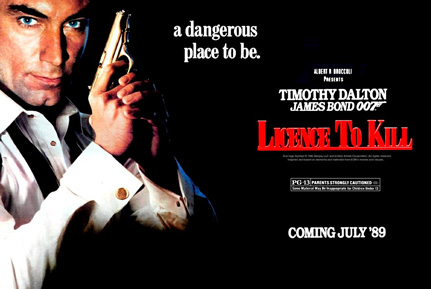
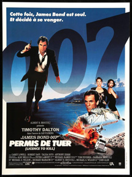
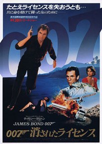
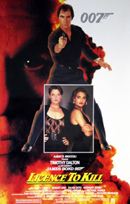
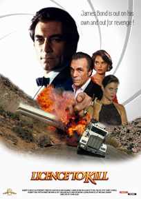
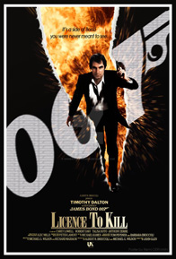
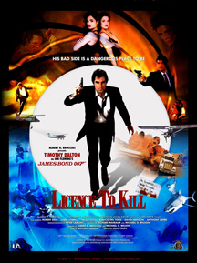
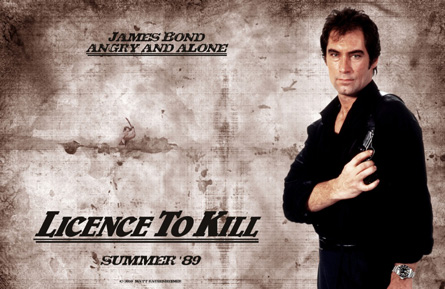

Michael G. Wilson
Michael G. Wilson
Richard Maibaum
United International Pictures (International)
"Licence To Kill" (Narada Michael Walden, Jeffrey Cohen and Walter Afanasieff)
Drug Enforcement Administration (DEA) agents collect MI6 agent James Bond and his friend, CIA agent Felix Leiter, on their way to Leiter's wedding in Key West, to have them assist in capturing drugs lord Franz Sanchez. Bond and Leiter capture Sanchez by attaching a hook and cord to Sanchez's plane and pulling it out of the air with a Coast Guard helicopter. Afterwards, Bond and Leiter parachute down to the church in time for the ceremony.
Sanchez bribes DEA agent Ed Killifer and escapes. Meanwhile, Sanchez's henchman Dario and his crew ambush Leiter and his wife Della and take Leiter to an aquarium owned by one of Sanchez's accomplices, Milton Krest. Sanchez has Leiter lowered into a tank holding a tiger shark. When Bond learns Sanchez has escaped, he returns to Leiter's house to find Leiter has been maimed and that Della has been murdered - and by implication raped. Bond, with Leiter's friend Sharkey, start their own investigation. They discover a marine research centre run by Krest, where Sanchez has hidden cocaine and a submarine for smuggling.
After Bond kills Killifer using the same shark tank used for Leiter, M meets Bond in Key West's Hemingway House and orders him to an assignment in Istanbul, Turkey. Bond resigns after turning down the assignment, but M suspends Bond instead and revokes his licence to kill. Bond becomes a rogue agent, although he later receives unauthorised assistance from Q.
Bond boards Krest's ship Wavekrest and foils Sanchez's latest drug shipment, stealing five million dollars in the process. He discovers that Sharkey has been killed by Sanchez's henchmen. Bond meets and teams up with Pam Bouvier, an ex-CIA agent and pilot, at a Bimini bar, and journeys with her to the Republic of Isthmus. He seeks Sanchez's employment by posing as an assassin for hire. Two Hong Kong Narcotics Bureau officers foil Bond's attempt to assassinate Sanchez and take him to an abandoned warehouse. They are joined by Fallon, an MI6 agent who was sent by M to apprehend Bond. Sanchez's men rescue him and kill the officers, believing them to be the assassins. Later, with the aid of Bouvier, Q, and Sanchez's girlfriend Lupe Lamora, Bond frames Krest by planting the $5 million in Wavekrest. Sanchez kills Krest via a decompression chamber and admits Bond into his inner circle.
Sanchez takes Bond to his base, which is disguised as the headquarters of a religious cult. Bond learns that Sanchez's scientists can dissolve cocaine in petrol and then sell it disguised as fuel to Asian drug dealers. The televangelist Professor Joe Butcher serves as middleman, working under Sanchez's business manager Truman-Lodge. During Sanchez's presentation to potential Asian customers, Dario discovers Bond and betrays him to Sanchez. Bond starts a fire in the laboratory, but is captured again and placed on the conveyor belt that drops the brick-cocaine into a giant shredder. Bouvier arrives and shoots Dario, allowing Bond to pull Dario into the shredder, killing him.
Sanchez flees as fire consumes his base, taking with him four tankers full of the cocaine and petrol mixture. Bond pursues them by plane, with Bouvier at the controls. During the course of a stunt filled chase through the desert, Bond destroys three of the tankers and kills several of Sanchez's men. Sanchez attacks Bond with a machete aboard the final remaining tanker, which crashes down a hill side. A petrol-soaked Sanchez attempts to kill Bond with his machete. Bond then reveals his cigarette lighter - the Leiters' gift for being the best man at their wedding - and sets Sanchez on fire. Sanchez stumbles into the wrecked tanker, blowing it up and killing himself. Bouvier arrives and rescues Bond.
Later, a party is held at Sanchez's former residence. Bond receives a call from Leiter telling him that M is offering him his job back. He then rejects Lupe's advances and romances Bouvier instead.
After Carey Lowell was chosen to play Pam Bouvier, she watched many of the films in the series for inspiration. Lowell had described becoming a Bond girl as "huge shoes to fill", as she did not see herself as a "glamour girl", even coming to audition in jeans and a leather jacket. While Lowell wore a wig for the scenes set in the United States, a scene where Bouvier is given money and told by Bond to go and buy some new clothes (and, going off and doing so, also has her hair cut) was added so that Lowell's own short hair style could be used.
Robert Davi was cast following a suggestion by Broccoli's daughter Tina, and screenwriter Richard Maibaum, who had seen Davi in the television film Terrorist on Trial: The United States vs. Salim Ajami. To portray Sanchez, Davi researched the Colombian drug cartels and how to do a Colombian accent, and since he was method acting, he would stay in character off-set. After Davi read Casino Royale for preparation, he decided to turn Sanchez into a "mirror image" of James Bond, based on Ian Fleming's descriptions of Le Chiffre. The actor also learned scuba diving for the scene where Sanchez is rescued from the sunken armoured car.
Davi later helped with the casting of Sanchez's mistress Lupe Lamora, by playing Bond in the audition. Talisa Soto was picked from twelve candidates because Davi said he "would kill for her". David Hedison returned to play Felix Leiter, sixteen years after playing the character in Live and Let Die. Hedison did not expect to return to the role, saying "I was sure that [Live and Let Die] would be my first – and last" and Glen was reluctant to cast the 61-year-old actor, since the role included a scene parachuting. Hedison was the only actor to play Leiter twice, until Jeffrey Wright appeared in both Casino Royale and Quantum of Solace.
Up-and-coming actor Benicio del Toro was chosen to play Sanchez's henchman, Dario for being "laid back while menacing in a quirky sort of way", according to Glen. Wayne Newton got the role of Professor Joe Butcher after sending a letter to the producers expressing interest in a cameo because he always wanted to be in a Bond film. The President of Isthmus was played by Pedro Armendáriz, Jr., the son of Pedro Armendáriz, who played Ali Kerim Bey in From Russia with Love.
Principal photography ran from 18 July to 18 November 1988. Shooting began in Mexico, which mostly doubled for the fictional Republic of Isthmus: locations in Mexico City included the Biblioteca del Banco de Mexico for the exterior of El Presidente Hotel and the Casino Español for the interior of Casino de Isthmus whilst the Teatro de la Ciudad was used for its exterior. Villa Arabesque in Acapulco was used for Sanchez's lavish villa, and the La Rumorosa Mountain Pass in Tecate was used as the filming site for the tanker chase during the climax of the film. Sanchez's Olympiatec Meditation Institute was shot at the Otomi Ceremonial Center in Temoaya. Other underwater sequences were shot at the Isla Mujeres near Cancún.
In August 1988, production moved to the Florida Keys, notably Key West. Seven Mile Bridge towards Pigeon Key was used for the sequence in which the armoured truck transporting Sanchez, following his arrest, is driven off the edge. Other locations there included Ernest Hemingway House, Key West International Airport, Mallory Square, St. Mary's Star of the Sea Church for Leiter's wedding and Stephano's House 707 South Street for his house and patio. The US Coast Guard Pier was used to film Isthmus City harbour. As production moved back to Mexico, Broccoli became ill, leading to Michael G. Wilson becoming co-producer, a position he subsequently retained.
The scene where Sanchez's plane is hijacked was filmed on location in Florida, with stuntman Jake Lombard jumping from a helicopter to a plane and Dalton himself being filmed atop the aircraft. The plane towed by the helicopter was a life-sized model created by special effects supervisor John Richardson. After filming wide shots of David Hedison and Dalton parachuting, closer shots were made near the church location. During one of the takes, a malfunction of the harness equipment caused Hedison to fall on the pavement. The injury made him limp for the remainder of filming. The aquatic battle between Bond and the henchmen required two separate units, a surface one led by Arthur Wooster which used Dalton himself, and an underwater one which involved experienced divers. The barefoot waterskiing was done by world champion Dave Reinhart, with some close-ups using Dalton on a special rig. Milton Krest's death used a prosthetic head which was created by John Richardson's team based on a mould of Anthony Zerbe's face. The result was so gruesome that it was shortened and toned down to avoid censorship problems.
For the climactic tanker chase, the producers used an entire section of a highway near Mexicali, which had been closed for safety reasons. Sixteen eighteen-wheeler tankers were used, some with modifications made by manufacturer Kenworth at the request of driving stunts arranger Rémy Julienne. Most were given improvements to their engines to run faster, while one model had an extra steering wheel on the back of the cabin so a hidden stuntman could drive while Carey Lowell was in the front and another received extra suspension on its back so it could lift its front wheels. Although a rig was constructed to help a rig tilt onto its side, it was not necessary as Julienne was able to pull off the stunt without the aid of camera trickery.







